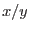

| description |
symbol/name |
| arithmetic negation |
- |
| addition/subtraction |
+/- |
| multiplication/division |
*// |
| modulus |
% |
| exponentiation |
**, pow(x, y) |
| absolute value |
abs(x) |
| sine/cosine/tangent |
sin(x)/cos(x)/tan(x) |
| arc sine/arc cosine |
arcsin(x)/arccos(x) |
| arc tan |
arctan(x)/arctan2(x, y) = arctan(x/y) |
| hyperbolic sine/cosine/tangent |
sinh(x)/cosh(x)/tanh(x) |
| exponential |
exp(x) |
| natural log |
log(x) |
| common log |
log10(x) |
| square root |
sqrt(x) |
| integral part |
int(x) |
| fractional part |
modf(x) |
smallest integral value not less than  |
ceil(x) |
| largest integral value not greater than |
floor(x) |
| floating point remainder of  |
fmod(x, y) |